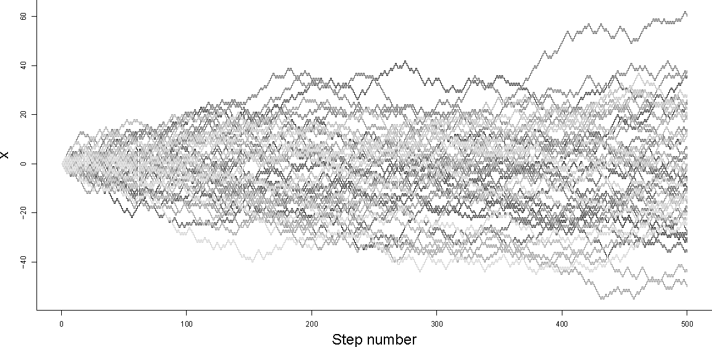
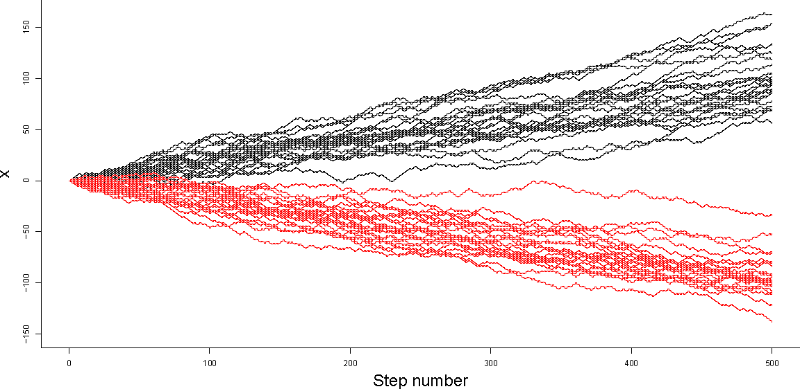
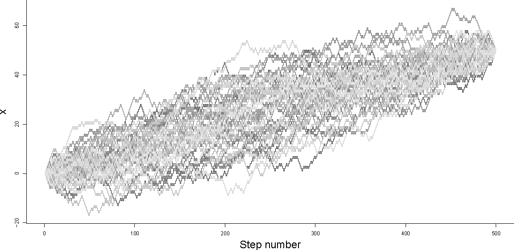

The video above is made from two, constrained, one-dimensional random walks through the frames of a video clip. The constraint here is that both output videos begin and end with the same frame from the original clip. Both videos have same number of output frames, but take different, random paths through the original set of frames. In this article, I'll outline how to generate such constrained random walks. Note that, for carrying out a walk in video frame space, it is important to use a discrete random walk and not a Gaussian random walk (or Weiner process). This constrained, discrete random walk process is probably closely related to a Brownian bridge.
Simulating an unconstrained, unbiased random walk
First, imagine we want to simulate how a variable $x$ changes during $n$ steps of a regular random walk. To begin with, we can specify a starting value: $x_0$. For any step $i$, we want to either increase $x_i$ by one, or decrease $x_i$ by one with equal probability. To make this decision randomly, we can generate a uniformly distributed real random number, between $0$ and $1$ ($~U(0,1)$). If the random number is greater than $0.5$ we can set $x_{i+1}=x_i+1$, otherwise we can set $x_{i+1}=x_i-1$. If we do this for all $i=0,...,n-1$ then our simulation is complete. Since this simulation is random or stochastic, results are likely to be different for each simulation run.

Figure 1 - Random walks 50 unconstrained random walks, starting from $x_0=0$. $n=500$
We can see from the plot above that the variability in the value of $x$ across an ensemble of simulations increases with step number $n$. In particular, note that $x$ has the widest range of values at the final step of the walk ($x_n$).
Simulating a biased random walk
If we wanted to bias the random walk in a particular direction, we could use a slightly different criterion for selecting whether to increase or decrease $x$ at each step. We can define the probability of decreasing $x$ at each step to be $\theta$. To simulate step $i$ we can generate a $U(0,1)$ random number as before, but this time if the random number is greater than $\theta$, we set $x_{i+1}=x_i+1$, otherwise we can set $x_{i+1}=x_i-1$.

Figure 2 - Biased Random walks 25 positively biased random walks (black, $\theta=0.4$) and 25 negatively biased random walks (red, $\theta=0.6$) all starting from $x_0=0$. $n=500$.
Simulating a constrained random walk
Finally, we can think about how to adapt the bias $\theta$ at each step in order to constrain our random walk so that it hits a specific target $x_{targ}$ after $n$ steps.
During a biased random walk of $n$ steps, we expect there to be $n\theta$ increasing steps and $n(1-\theta)$ decreasing steps. If we define $\Delta x=x_n-x_0$ (the observed change in $x$ after $n$ simulated steps), we can say that the expected value of $\Delta x$ is the expected number of increasing steps, less the expected number of decreasing steps:
$E(\Delta x) = n(1-\theta)-n\theta$
By choosing $x_{targ}$, we specify a value that we would like $\Delta x$ to take. We can adjust $\theta$ in order to maximise the probability of hitting $x_{targ}$ after $n$ steps:
However, as we can see from the wedge shape of the (e.g. black) simulations in Figure 2 above, choosing a single value of $\theta$ will not guarantee that we actually hit our target. Fixing $\theta$ at an appropriate value only makes hitting the target more likely. To constrain the simulation so that it converges to $x_{targ}$ exactly, we need to recalculate $\theta$ after every step. We can do this by resetting $x_0$ in the expression above to the current value of $x$, and decreasing $n$ to represent the number of steps remaining, for each step $i$ in the simulation:
$\theta_i=\frac{1-\frac{x_{targ}-x_i}{n-i}}{2}$
In the plot below, we can see that the random paths in the ensemble all start with $x_0=0$ and finish with $x_n=50$ after 500 steps ($n=500$), that the paths are diverse, and that the ensemble of paths plotted has a kind of left-right symmetry (a sausage shape), instead of the wedge shape of the unconstrained walks in Figure 1.

Figure 3 - Constrained Random walks 50 constrained random walks starting from $x_0=0$ and ending at $x_n=50$. $n=500$.
Below is some R code which demonstrates simulating unconstrained, unbiased random walks, biased random walks and constrained random walks (corresponding to Figures 1,2 and 3). It is worth noting that in order for it to be possible to hit $x_{targ}$, after taking $n$ steps from $x_0$, $x_{targ}-x_0$ and $n$ must both be odd or both be even. However, the algorithm detailed below will still converge to one of the two next-nearest final values if this is not the case.
Mass action and the logistic population model
In a previous article I described the discrete stochastic logistic model of population growth. I am particularly interested in modelling populations of cells dividing until they run out of space or nutrients. I showed how to construct the logistic model as an adaptation of an exponential growth model with an extra density-dependent term. I assumed that the hazard function for the discrete stochastic version of the logistic model is the same as in the deterministic case.
In this article I will show that the logistic model can be derived by thinking about a a single, batch, second-order, biochemical reaction between cells and nutrients to produce more cells. This allows us to easily write the logistic model in a standard, computer-readable, modelling format: SBML, which in turn allows us to use tools for simulating biochemical reaction networks to carry out deterministic or stochastic simulations of the growth of such populations. Writing the logistic model in terms of second order mass action kinetics also allows us to be very clear about the assumptions underlying the stochastic version of the model, as the probabilistic theory behind chemical reactions obeying mass action kinetics is well established.
We can think about the construction of the logistic model by considering the simple chemical reaction between cells and nutrients above. We can assume that the above reaction proceeds at a rate determined by the law of mass action. In order for mass action kinetics to apply, we have to assume that the reactants in the system studied (cells and nutrients in this case) are perfectly mixed, so that we can be confident that the probability of a successful reaction is proportional to the concentration of each reactant. The mass action theory of chemical kinetics is appropriate for simulating chemical reactions occurring in the gas phase (where fast diffusion of molecules in random directions, colliding randomly ensures good mixing) or in the liquid phase, provided that the liquid solution is well-stirred (e.g. by external, mechanical mixing). The assumption of mass-action kinetics is less valid in the context of biochemical reactions within cells, where there is a great deal of spatial heterogeneity and no such external mixing process. It is even less valid when modelling fluctuations in the size of animal populations who do not behave randomly and live in a highly heterogeneous and dynamic environment. Nevertheless, the same concept of mass-action kinetics has been used during modelling of all of these systems with some success.
The validity of assuming mass-action kinetics, when considering the growth of cell populations growing in culture, lies somewhere between the validity of assuming mass-action kinetics when modelling liquid phase chemical reactions and animal populations. It seems reasonable to assume that microbial cells (unicellular organisms) cultured in well-stirred liquid medium have equal access to remaining nutrients. However, the same microbial cells growing on a nutrient-rich substrate (like a solid agar surface, for example) move slowly (in the case of bacteria) or are immotile (in the case of yeasts). Such cells will experience concentration gradients as nutrients diffuse through the substrate or even past other cells before reaching them. When culturing mammalian fibroblasts in vitro cells are not mixed and form monolayers on the surface of flasks of liquid medium. Fibroblasts are motile, and have evolved to form tissues and actively seek each other out. Although their movement relative to each other cannot be described as random, provided they form a thin layer on the flask bottom,movement relative to their nutrients is approximately random. Yeasts growing on solid surfaces form clonal colonies which spread out in a circle from the original progenitor population, displaced by cell division alone. Provided that the depth of the yeast colony does not become too great, it seems reasonable to assume that such cells have equal, random access to nutrients from their substrate.
Reaction
Chemical reaction representation of a cell consuming one unit of nutrients to produce one more cell.
Assuming mass-action kinetics, the rate at which the above reaction proceeds depends on the rate constant $r$ and the concentration of cells and nutrients (concentration represented by square brackets).
$r[Cell][Nutrient]$
Differential equation representation
Given the above reaction, the dynamic evolution of the concentrations of cells and nutrients in the system can be described by the following two ordinary differential equations:
The probability of a reaction occurring depends on the concentration of the reactants, not the absolute number of molecules (or cells). Concentration is, however, proportional to the absolute number of reactants and inversely proportional to the size of the system. If we choose to measure the size of the system, in this case, as the total number of elements in the system (which remains constant by the law of mass conservation, see below): $K$, we can write the following expressions for concentrations, where $N_i$ is the number of element $i$ in the system:
We can see from the ODEs above that for every "unit" of nutrients consumed, one "unit" of cells are produced. Therefore the number of "units" in the system remains constant. We can call the total number of "units" in the system $K$, and we can see that this will be the maximum number of cells that the system will support.
Traditional form for logistic equation comes from the ODE for $[Cell]$
If we rewrite the ODE for $[Cell]$ in terms of $N_{Cell}$ and rearrange, we recover the familiar form of the logistic equation, whose solution we saw previously.
$\frac{d[Cell]}{dt} = r[Cell][Nutrient]\\
\Rightarrow \frac{1}{K}\frac{N_{Cell}}{dt}=r\frac{N_{Cell}}{K}\frac{(K-N_{Cell})}{K}\\
\Rightarrow \frac{dN_{Cell}}{dt} = r N_{Cell}(1-\frac{N_{Cell}}{K})$
A discrete, stochastic, logistic population model
In this article, I will present a simple, discrete, stochastic version of the logistic population model and a convenient function for carrying out dynamic simulations from this model. The discrete, stochastic version of the logistic model is relevant for any growth process initialised with small populations. For example, in biology, the analysis of growth curves for clonal cell cultures derived from single cells is attractive for several technical reasons, but growth curves are likely to be very difficult to interpret with a continuous, deterministic modelling framework. This is because during the first several population doublings, the system is discrete (low integer numbers of cells) and unmodelled environmental variability and cell-to-cell heterogeneity are likely to cause strongly stochastic effects on cell division.
Introduction to the logistic model
The logistic model of population dynamics was proposed by Verhulst in 1838 as an improvement to the Malthusian exponential model for describing population growth. The logistic model is a very simple mechanistic model that can be applied to a wide range of population types, including ecological populations or human demographics, but I am mostly interested in using the logistic model to describe the growth of clonal cell populations growing in vitro.
The continuous, deterministic, exponential growth model of a population, or culture (of size $N$) of dividing cells with an intrinsic growth rate $r$ can be written as an ordinary differential equation:
$\frac{dN}{dt} = r N$
If we assume that the culture was inoculated with $N_0$ cells (the initial condition for the population size), we can easily solve the above ODE to give an analytical solution for the dynamics of population size according to the exponential model:
$N(t)=N_0 e^{r t}$
There are several strong assumptions embedded in this model:
Growth is never inhibited by any density effects (i.e. the population never runs out of space or resources). This assumption is only valid during the early stages of population growth.
Population size is continuous (i.e. a real number, rather than an integer). This assumption is approximately correct for large populations.
All members of the population have the same growth rate. For real, heterogeneous, biological populations, growth rates are likely to vary slightly within populations (e.g. from cell to cell). Aging populations are also likely to have age-specific growth rates.
Growth rate is constant with time. Even if environmental conditions on which expected growth rates depend, like temperature for example, are kept constant, actual rates of growth may fluctuate with time. However, for a sufficiently large population, average growth rate will describe population-level dynamics well.
Cells in the population do not die during the simulated experiment or the net result of parallel birth and death processes can be adequately represented by a single overall growth rate. The latter is often an important assumption for demographic or ecological modelling, but not generally valid for stochastic simulation.
The continuous, deterministic logistic model eliminates the need to make the first assumption above by incorporating density-dependent growth inhibition. It introduces a new concept: population carrying capacity, described by a new model parameter $K$. Carrying capacity is the maximum population size that can be supported (given, say, environmental nutrient constraints, or space constraints). We can think of the logistic model ODE (below) as being the same as the exponential model ODE, but with growth rate multiplied by an inhibition term. The value of the inhibition term is approximately 1 when the population is "small" (e.g. when $N << K$), but as $N$ approaches $K$, the inhibition term (and therefore the population growth rate) approaches zero asymptotically. Population size $N$ approaches carrying capacity $K$ asymptotically as $N = K$ is a stable, attractive fixed point for the system.
$\frac{dN}{dt} = r N\left ( 1-\frac{N}{K} \right )$
The logistic model ODE has an analytical solution. Solving this simple ODE is a good exercise in integration by parts.
In this section $N$ will be an integer, representing number of cells. To carry out discrete event simulation of the logistic model, we need to be able to write down the hazard function for the probability that a cell divides in an infinitesimally small window of time about time $t$. The hazard is constant between divisions and modelling it will allow us to estimate the time between cell divisions. We will update cell number by simulating the time between cell divisions, incrementing the population size by one at each division and continuing until a termination condition is met. In this case, we will terminate simulation when the population reaches its carrying capacity.
Gillespie (1977) shows us how to use a wide range of hazard functions derived from zeroth, first or second order rate expressions for reactions in a chemical network. It is possible to derive the logistic equation assuming cells consume nutrients by mass action reaction kinetics (I'll write another post about this soon), and this makes it more clear why the carrying capacity $K$ should be included in the hazard function. For now, let us accept that the RHS of the logistic model ODE above is an appropriate hazard function for discrete stochastic simulation, describing the dependance of the probability of a cell division occuring on the number of cells in the population and on the model parameters.
$h(N,r,K) = r N\left ( 1-\frac{N}{K} \right )$
Starting at $t = 0$ and given an initial population size (the number of cells in the culture inoculum $N(0) = N_0$) we can simulate the time to the next cell division, given the above hazard function, by sampling from an exponential distribution:
$\delta t \sim{ Exp(h(N,r,K))}$
Then we can update the simulated time and population size computationally:
$t = t + \delta t\\
N = N + 1$
We repeat these two steps until the population has reached its carrying capacity, i.e. while $N < K$. Ensembles of simulated realisations from this model are shown in the plot below.
Logistic model simulations 100 discrete stochastic simulations from the logisitic model of growth from an inoculum of one cell ($N_0 = 1$) to a carrying capacity of 100 cells ($K = 100$) for a slow growing strain (pink, $r = 3$) and a fast-growing strain (grey, $r = 10$). Deterministic simulations using the same parameter values are overlaid in red and black respectively.
There is one feature unique to the logistic model that allows us to carry out relatively efficient simulation: we can calculate the total number of events (e.g. cell divisions) which will occur a priori ($K-N_0$). This allows us to generate all the random numbers required for stochastic simulation at once, which in turn allows vectorised calls to random number generators. Generating random numbers with vectorised calls is useful for carrying out simulations in high-level programming languages such as R or Python where vectorised operations are many times faster than equivalent for loops. The R function below is quite fast, simulating a cell population with a carrying capacity of 1.6 million cells (corresponding to a realistic pinned yeast culture growing on CSM solid agar for example) in about half a second. The current version of the Python function is about the same speed.
The code snippets above work by generating $K-N_0$ $U(0,1)$ random numbers and the list of cell numbers ($N$) present after each division event, using $N$, $r$ and $K$ to calculate the hazard of division for each value of $N$ and finally, using the inversion method to generate a sample from the exponential distribution with rate parameter equal to the hazard.
Conclusion
I'm particularly interested in applying this simple function to understanding population growth curves initiated from single cells. The plot above demonstrates the very wide range of different growth curves that this model produces for simulated cultures inoculated from a single cell. In particular, slow growing strains, whose probability of division is lower at a given time, are affected strongly by discrete stochastic effects during the first few divisions. This results in the much wider spread of pink curves than grey in the above figure. The plot above suggests that experimental observations of growth curves arising from cultures inoculated by single cells are likely to have a high degree of intrinsic stochasticity. Fitting a deterministic model to experimentally observed replicate growth curves is likely to give an artificially high estimate of the variability of the growth rate parameter $r$ in this case.
This function is also reasonably efficient and is unusual in that it is fully vectorised. This allows exploration of discrete stochastic logistic model simulations in high-level languages such as R and Python, allowing rapid prototyping of inference and simulation workflows for example.